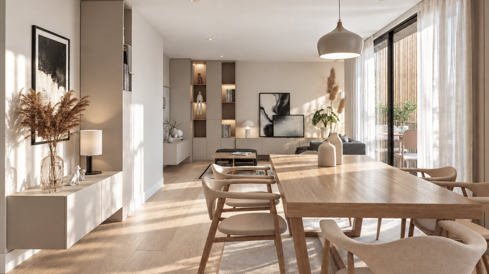
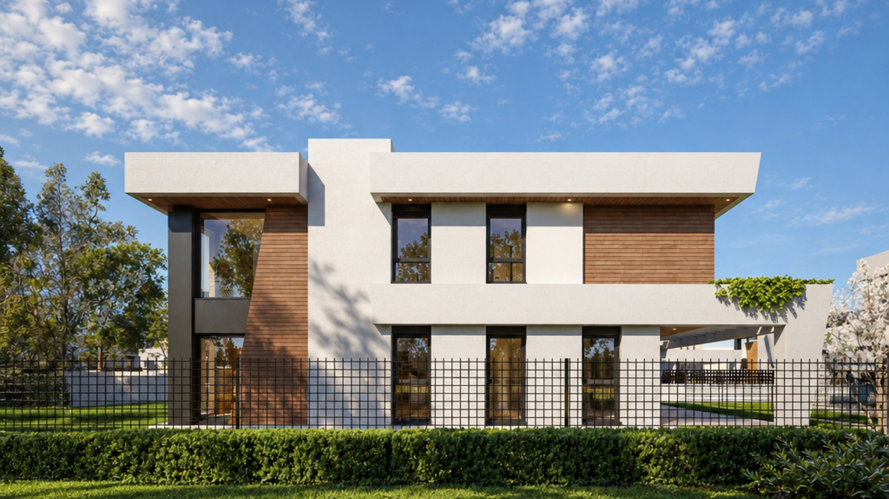
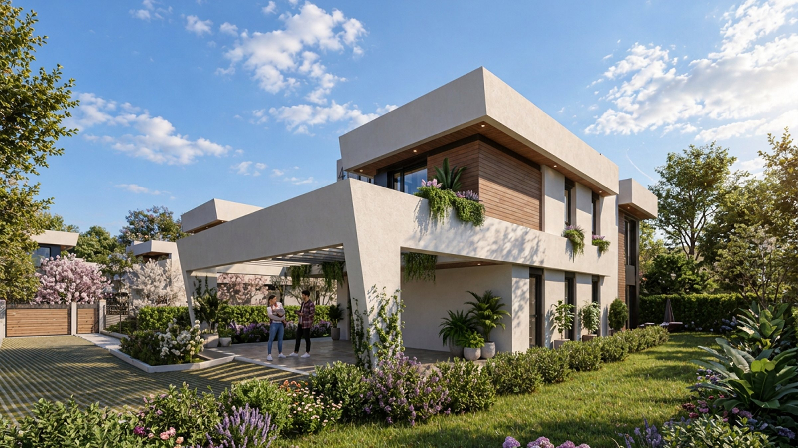
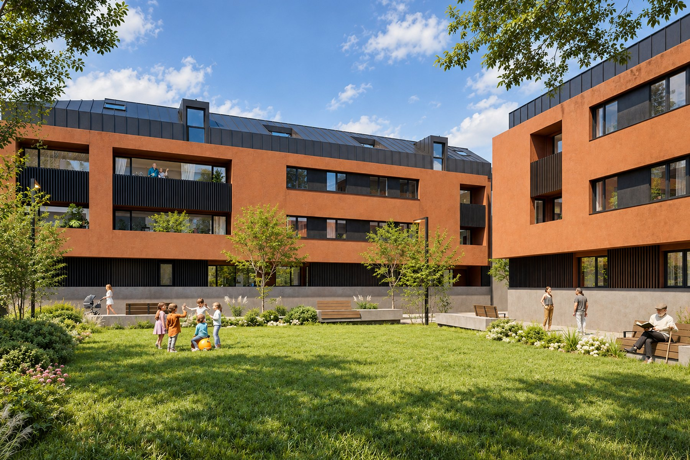
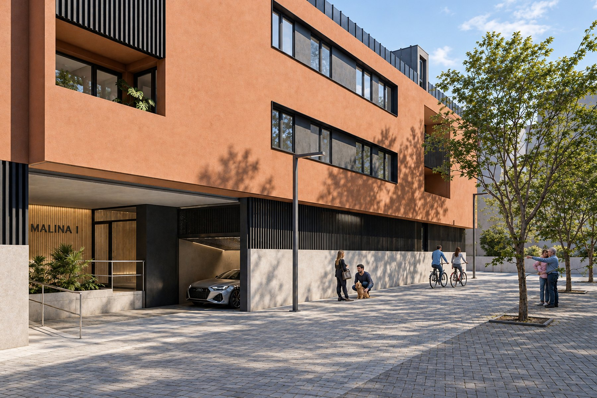

Portfolio
Arquitectura, vista antes de construirse.
Estudio de visualización de Diego Moreno. Renders, animación y material comercial para arquitectos, promotoras e interioristas.
Estudio de visualización de Diego Moreno. Renders, animación y material comercial para arquitectos, promotoras e interioristas.

Un conjunto completo de imágenes para presentar La Gerra, una promoción residencial en una zona apartada de Suances: cómo se asienta el edificio en la parcela, la piscina y los jardines comunes y cómo se viven las viviendas por dentro.
Los exteriores muestran el edificio a través de sus volúmenes en voladizo, su revestimiento cálido y sus terrazas ajardinadas, a pie de calle y desde el aire. La piscina y el jardín comunes tienen sus propias vistas, porque son un argumento de venta de la promoción. En el interior, una paleta serena y natural, con luz del día, vistas verdes y el mar en el horizonte, permite imaginar cada vivienda habitada.



Un conjunto de imágenes interiores y un vídeo para presentar Peñaherbosa 27, seis viviendas en Puertochico, Santander: el salón-comedor, la cocina, los dormitorios y el baño, con los acabados elegidos para el edificio.
Una luz natural suave, filtrada por visillos, marca un tono sereno y cálido. Una paleta contenida de carpinterías greige, roble claro, mármol veteado y grifería negra recorre todas las estancias, para que las viviendas se lean como un único diseño. Las vistas amplias explican la distribución, los detalles muestran los acabados y las personas en escena hacen que cada estancia se sienta habitada. El vídeo recorre esa misma luz.


Un conjunto completo de imágenes para presentar Quinta Atlántica, una promoción de bloques de baja altura en Suances: cómo se asienta en la ladera, las zonas comunes y cómo se vive dentro de las viviendas.
Los exteriores leen el proyecto a través de sus propios materiales: lamas de madera, carpinterías oscuras y vidrio frente a jardines en terraza y el mar. Las cámaras buscan el horizonte entre los bloques y la luz de la tarde da profundidad a las fachadas. En los interiores, una paleta cálida y neutra, con luz natural y vistas al mar, permite imaginar las viviendas habitadas.


Un conjunto de imágenes exteriores y un vídeo para presentar Amura, un nuevo edificio residencial en Santander: el edificio en su calle, el acceso y el jardín, y la terraza en lo más alto.
Una luz cálida de última hora de la tarde recorre los paneles claros y el revestimiento oscuro de lamas, y los balcones en ángulo proyectan sombras largas y limpias. Las vistas pasan del volumen completo a los detalles a pie de calle —acceso, jardín, terraza— y terminan en la cubierta, donde se abre el mar. El vídeo lleva esa misma luz al movimiento.



Un conjunto de imágenes exteriores para presentar Abra de la Marina, once viviendas unifamiliares en Soto de la Marina: las casas y sus jardines, los porches y accesos, el vial privado que las une y el estilo de vida que ofrece la urbanización.
Volúmenes blancos y limpios, revestimiento cálido de madera y carpinterías oscuras bajo un cielo despejado de última hora de la tarde. Las vistas van de la casa completa al porche, el acceso y el jardín, con personas usando los espacios para que cada vivienda se lea habitada. Una vista aérea explica la parcela, y un plano al anochecer cierra la serie con las ventanas encendidas.



Un conjunto de imágenes para presentar Novalinas, un nuevo edificio residencial en pleno centro de Torrelavega, a escasos metros de la catedral, entre las calles Novalinas y San Bartolomé: cómo encaja en la ciudad, el espacio público que lo rodea y lo que ofrecen las viviendas.
Las vistas se toman a la altura del peatón para que el edificio se lea como parte de la calle y de la nueva plaza. Las fachadas terracota, las cubiertas negras de metal y los balcones de lamas se muestran de día y al anochecer, cuando las ventanas encendidas y la plaza cobran vida. Dentro, un interior luminoso y cálido enseña las viviendas habitadas.



Imágenes que sitúan el edificio en su contexto real —luz, vegetación, escala y calle— antes de colocar el primer ladrillo.
Espacios amueblados, iluminados y estilizados para que tu cliente entienda —y apruebe— un interior antes de comprar o construir nada.
Recorridos y vuelos que muestran un edificio en movimiento, con una cámara pausada que sigue la forma en que las personas lo recorrerán de verdad.
Planos en color, infografías y piezas que convierten una promoción en algo fácil de entender, presentar y vender.